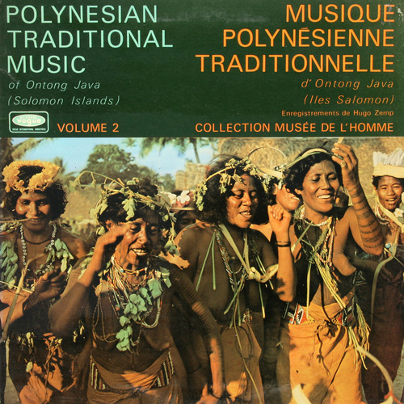

(ver en pantalla completa y en HD / recommended full screen & HD)
también puedes verlo en youtube / watch in youtube
Estamos muy contentas de presentar el fruto de la colaboración de antropoloops + MI-MI NA :) . Esperanza Moreno ha desarrollado una aplicación en Processing para visualizar en tiempo real como se van mezclando los diferentes loops y se va construyendo la canción. La aplicación muestra la procedencia y el año de grabación de cada loop, así como las portadas de los discos a los que pertenecen las canciones originales. Para el mapa se ha usado la proyección de Robinson. Esta canción está compuesta con 36 loops procedentes de 22 canciones diferentes.
We are pleased to present the result of the collaboration of antropoloops + MI-MI NA :) . Esperanza Moreno has developed an application in Processing to display in real-time how the different loops are mixed and the song is built. The application displays the origin and recording year of each loop, and the covers of the original songs. We have used for the map the Robinson projection. This song is made with 36 loops from 22 different songs.
"Detente judas Dance"
Las 22 canciones usadas están en los siguientes discos:
The 22 songs are located in the following albums:
Saeta,
El Agujetas,
Detente Judas - Una Limosna SINGLE,
2000,
Andalucia,
Discours,
Chants De Hienghène,
Kanak Songs. Feast And Lullabies,1984,Nueva Caledonia
http://aaseance.blogspot.com.es
Huakanga,
mixed chorus,
Polynesian Traditional Music of Ontong Java - Solomon Islands - LDM 30 109,
1969,
Ontong Java Atoll,
http://lolaradio.blogspot.com.es

Por lo que yo voy mirando (solea),
El Agujetas,
Cantes Gitanos,
1972,
Andalucia,
Nam Phat Khay,
Various,
Laos. Lam Saravane/Musique Pour Le khène,
1989,
Laos,
http://aaseance.blogspot.com.es/
(amazing post with many wonderfull recordings!)
este instrumento es sencillamente increible...
Ramata,
Barma people in Massenya,
Percussions Afrique No. 1 Tchad,
1966,
Chad,
http://easyjams.blogspot.com.es/
Cumbia sampuesana,
Luis E. Martinez,
Cumbias Solamente Cumbias,
1976,
Colombia,
http://globalgroovers.blogspot.com.es
Te vi en un llano (bulerias por solea),
El Agujetas,
Rutas del Cante Jondo,
1973,
Andalucia,
Pae,
Te Hia'Ai Ora,
South Pacific Drums,
1965,
Polinesia Francesa,
Iva,
Temaeva,
South Pacific Drums,
1965,
Polinesia Francesa,
http://a-hell-on-earth.blogspot.com.es
Tawe Kerea,
Various,
Huli Highlands. Papua New Guinea,
1974,
Papua-Nueva Guinea,
http://www.discogs.com/
Dah win gou,
Various,
Camaroon: Flutes of the Mandara Mountains (Ocora 560110),
1994,
Camerun,
http://differentwaters.blogspot.com.es/
recorded by Nathalie Fernando, Fabrice Marandola
http://www.sukur.info/Music/Aerophones.htm
Usiutu - Chant Funèbre,
Various,
Iles Trobriand: Papua New Guinea,
1974,
Islas Trobriand,
http://aaseance.blogspot.com.es
Η Γαρυφαλλιά-The GARYFALLIA,
PERPINIADIS STELLAKIS,
Delta Club: canción rebetiko Anthology CD04,
Grecia,
http://mipaiselmediterraneo.blogspot.com.es/

Drum & Flat Gongs,
Mnong Gar Music from Vietnam,
Mnong Gar Music from Vietnam,
1972,
Vietnam,
http://artoflosing.canalblog.com
Omaha Dance,
Sioux,
Music Of Sioux & Navajo,
1979,
Dakota del sur,
http://artoflosing.canalblog.com
Ubwang Ceremony for twins,
Various,
Lunda - Zaire - Tervueren-10,
1984,
Zaire,
http://royalrecordings.wordpress.com
Gunbalanya Bunborg,
Various,
Arnhem Land: Authentic Aboriginal Songs And Dances,
1957,
Arnhem Land,
http://aaseance.blogspot.com.es/
Наигрыш (76),
Music of the Northern lights,
1964,
Kamtchatka,
http://www.gusli.su/
Koryaks
Etenraku,
Société Ono Gagaku Kaï, Gagaku,
1979,
Japon,
http://rootstrata.com/
A4 Gaita and Decima at Atanquez,
Various Artists - Atanquez,
LP 1 - The Sierra Nevada de Santa Maria / The Yoku Motilon of the Sierra de Perijá,1960,
Colombia,
The Sierra Nevada de Santa Marta
http://grow.pauau.org/